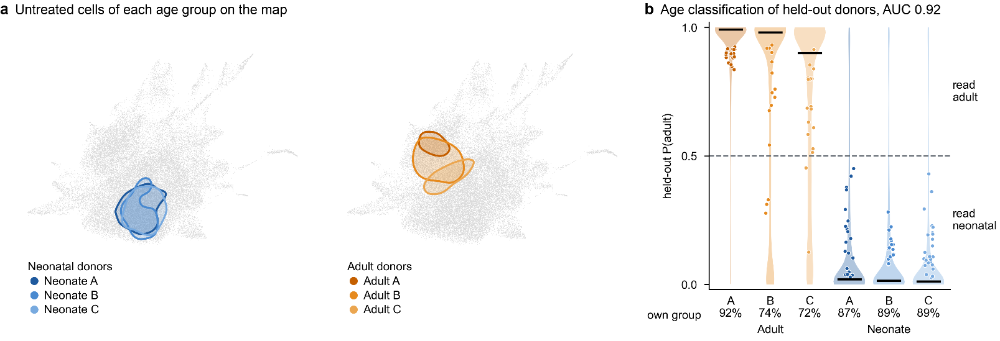
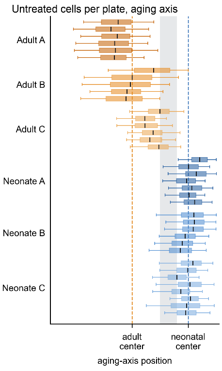
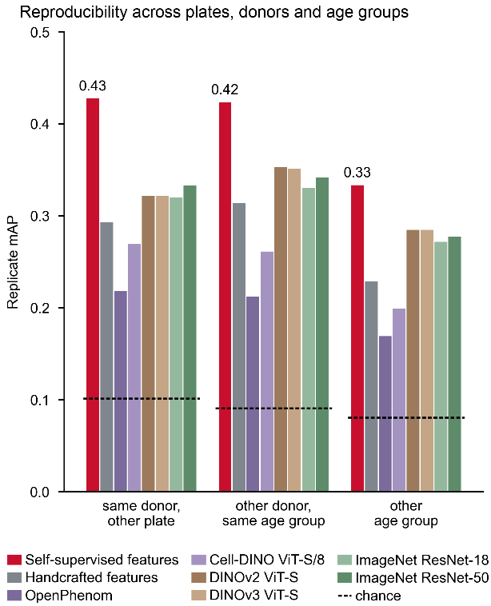
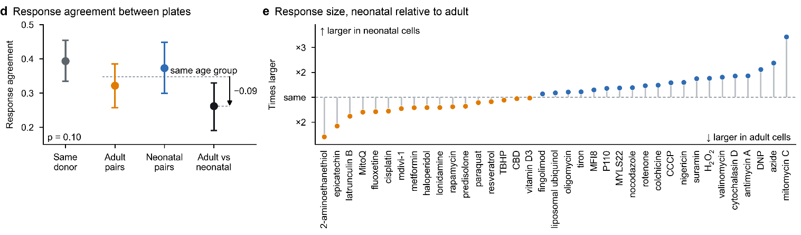

Research · 2026 Manuscript in preparation
Representation learning on live-cell mitochondrial images defines an aging axis and age-dependent drug responses in primary human fibroblasts
1Pharmacology ·
2Electrical and Computer Engineering ·
3Biochemistry & Molecular Biophysics
University of California San Diego · *Equal contribution
TL;DR We imaged mitochondria in 144,624 living human fibroblasts from three adult and three neonatal donors, treated with 37 compounds, and trained a self-supervised encoder without age or compound labels. Its embedding reads a donor's age group from mitochondria alone, defines an aging axis from adult to neonatal cells, and shows that the same compound acts differently on adult and neonatal cells.
Motivation
Mitochondria change with age, and the shape of the mitochondrial network is a sensitive readout of how a cell responds to drugs. Yet drug responses are rarely compared between ages in living cells. Biological age is usually read from DNA methylation or transcription, which consumes the cells it measures, and mitochondrial images are usually reduced to a few predefined measurements such as branch length or object count.
We ask whether a model that learns mitochondrial phenotype without labels can read donor age and drug response together, in the same living cells.
Method: live imaging and self-supervised learning
Primary dermal fibroblasts from three neonatal and three adult donors (45–49 years) were treated for 4 h or 18 h with one of 37 compounds acting on mitochondria and related pathways, and imaged live with MitoTracker Green and the membrane-potential-sensitive dye TMRM. After single-cell segmentation, a convolutional encoder was trained on the cells by self-supervised learning.
![Study overview. (a) Primary dermal fibroblasts from neonatal donors and adult donors aged 45, 48 and 49. (b) The compound library, drawn on a cell schematic by target and grouped by mechanism. (c) Live fibroblasts stained with MitoTracker Green and TMRM, imaged in 96-well plates. (d) Single-cell segmentation and preprocessing. (e) Self-supervised training with an online and an EMA target network, a view-consistency loss and an MMD loss that aligns untreated control cells across plates. (f) The frozen encoder's embedding, coloured by donor and by drug, interpreted with handcrafted features.](../assets/figures/agingspace/pipeline.png?v=2)
No age or drug labels
The encoder learns to match two altered views of a cell, or a cell and the mean of other cells in its well. Donor age and compound identity are never training targets.
Plates aligned, responses free
Untreated cells of a donor are paired across plates and aligned with an MMD loss, keeping plate effects out. Treated cells are not aligned, so compound responses stay free.
Readable embedding
Each cell gets a 512-dimensional embedding, benchmarked against 494 handcrafted features and six pretrained image encoders and interpreted through 36 named features.
Donor age is readable from mitochondria
A classifier trained on the untreated cells of five donors assigned the cells of the sixth to the correct age group with an AUC of 0.92. Of the ten ways to split the six donors into two groups of three, only the split by age separated every held-out donor correctly. Neonatal mitochondria were longer, larger and more branched, while adult cells held more, shorter ones — but no single feature carried the difference, and the embedding (AUC 0.92) captured more of it than all handcrafted features together (0.86).

An aging axis
The direction from the adult center (0) to the neonatal center (1) defines an aging axis. Every adult plate had its median cell at or below 0.50 and every neonatal plate at or above 0.80, while plates of one donor, imaged on different days, lay close together. The axis therefore gives a unit for single cells and drug responses alike: a shift of 0.5 is half the difference between untreated adult and neonatal cells.

Drug responses repeat — within an age group
Although compound identity was never a training target, wells treated with the same compound retrieved each other across plates and donors. Reproducibility barely changed from other plates of the same donor (replicate mAP 0.43) to other donors of the same age group (0.42), but fell to 0.33 across age groups. At every level the embedding was more reproducible than handcrafted features and six frozen encoders pretrained on natural images or microscopy.

The same drug acts differently on adult and neonatal cells
Responses to the same compound agreed less between an adult and a neonatal donor (cosine 0.26) than between two donors of the same age (0.32–0.37), for 33 of 37 compounds. Some compounds kept nearly the same response in both age groups; others moved adult and neonatal cells in opposite directions. Response size also depended on age, compound by compound, and the difference lay mainly in how many cells responded — up to eightfold between age groups — rather than how far responding cells moved, a distinction only single-cell data can make.

Why it matters. Cellular age acts as an effect modifier for mitochondrial pharmacology: a compound characterized in young cells cannot be assumed to behave the same way in the aged cells an intervention is meant to treat.
Confidential until publication
The study is complete. Further results, including a compound screen along the aging axis, are kept confidential until the paper is published and will be added here then.